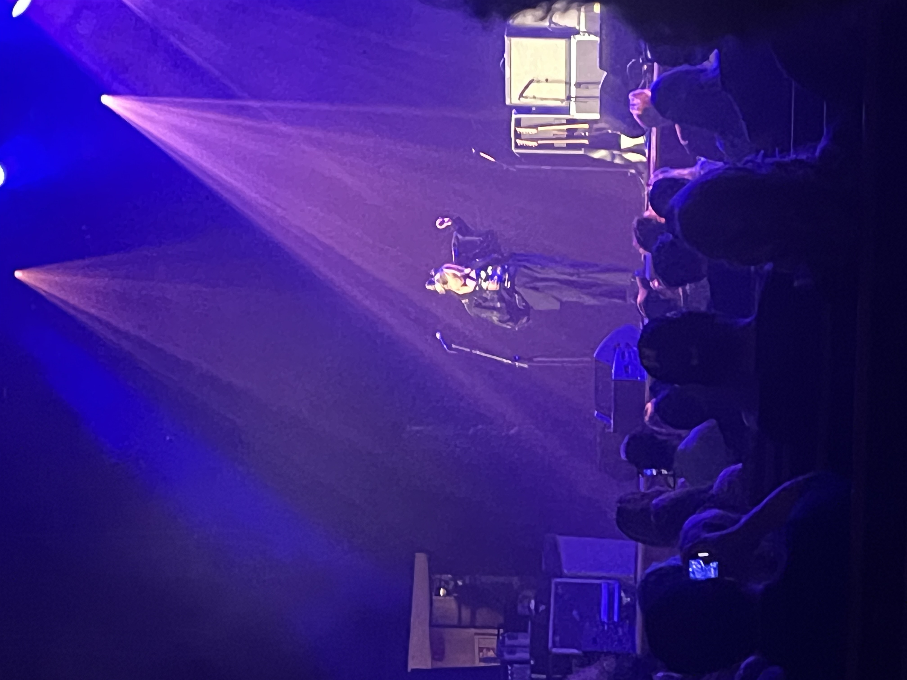
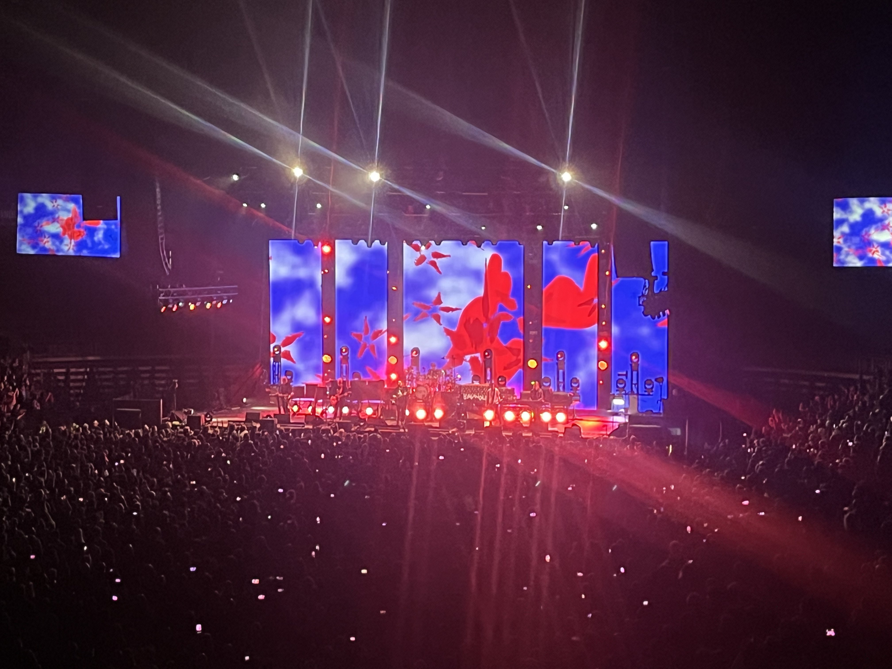
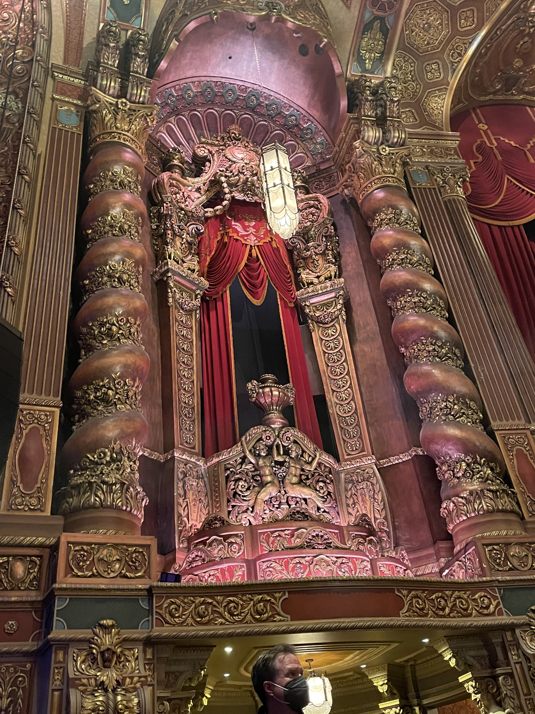
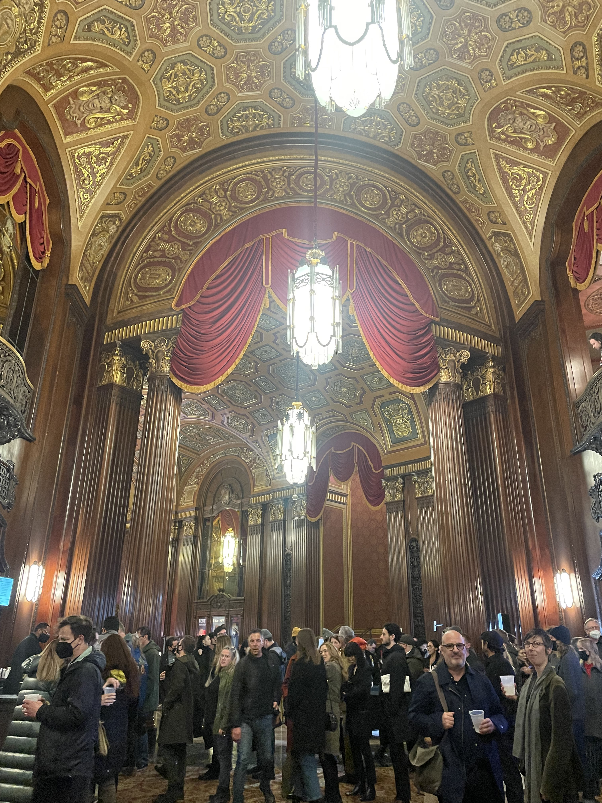
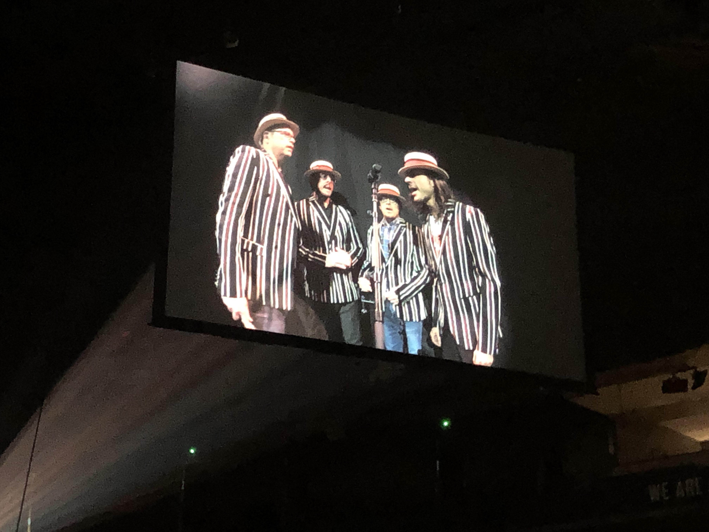
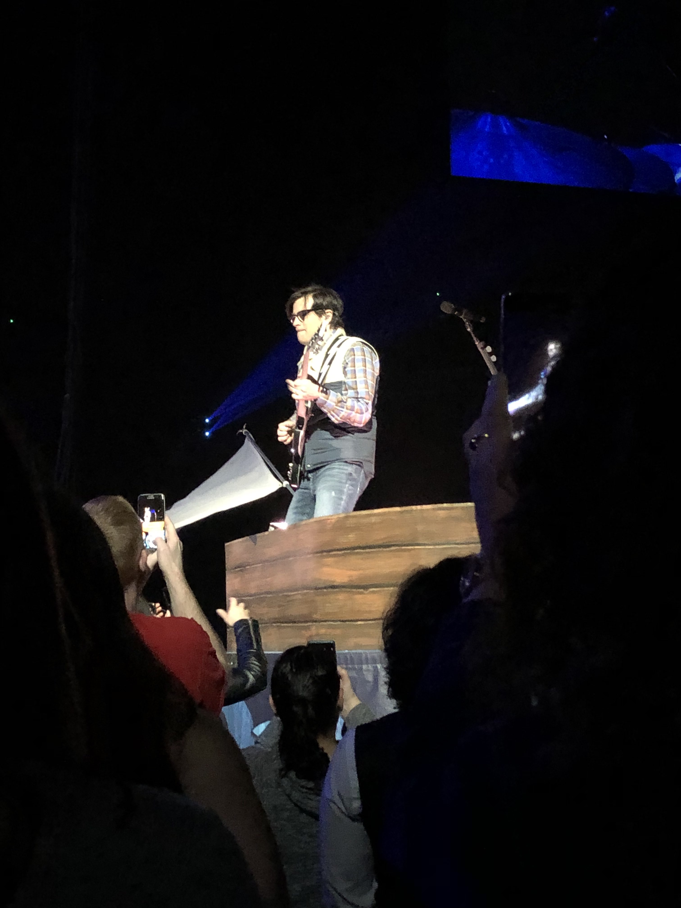
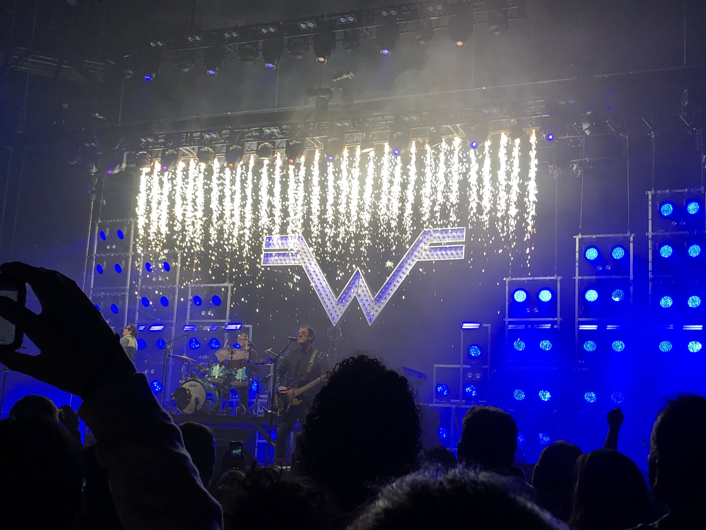

CONCERT JOURNAL
Live music is a wonderful thing.
There is nothing quite like being in a crowd full of likeminded people all together in one venue to watch some rockstar or other do their stuff for a couple hours.
Sometimes the crowd is similar--everyone in their subculture uniform, drinking overpriced beers and waiting in twenty-minute-long line-ups for tee-shirts. Sometimes they're totally different--fourty-five-year-old former-punks and nineteen-year-olds wearing zebra-print crocs in the same space, as equals, for just a little while. Some concerts are colossal commercial affairs and others are loosely-assembled gaggles of teenagers looking for something fun to do on a Saturday night.
No matter what, though, all concerts share a certain electric feeling; some kind of indescribable psychic interchange of human emotions and energy. Music has a unique quality among the art-forms to speak directly to human emotion, regardless of language-barrier or personal experience, and that power is amplified tenfold when it's performed live.
On this page, you can read all about the concerts and music-events I've been to, what the highlights were, and how they made me feel.
WILCO
August 29, 2025
Jubilee Auditorium, Calgary, Alberta, Canada
Wilco was awesome. The Jubilee is also awesome-maybe too awesome, as the acoustics were so loud they almost hurt. More than makes up for the Violent Femmes Disappointment Experience I guess. Someone please tell Mr. Tweedy that that is enough reverb bro.
I'm writing this a little after the fact so the order has mostly slipped my mind, but there were a lot of really good renditions in this show. Good mix of old and new stuff. I Am Trying To Break Your Heart was the first I recognized and it was really great, so was I'm The Man That Loves You. Cruel Country was one that was new to me that I had to go look up and listen to right away after, I love it's slow-pokey country trail-song vibe. If I Ever Was a Child was incredible live and so was California Stars, which did make me cry. God I love that fuckin Billy Bragg album.
Jesus, Etc. is my (and everyone elses') favourite Wilco song and it was really really great to hear live, especially with the audience participation bits. Somehow the "Ev'ry one/is a burning sun" bit really really got me, I don't think I ever absorbed the implications of that line fully. I did a lot of crying this show. Bit like Nick Cave in a way. Maybe the fucking earbleedingly loud guitar distortion had something to do with it too I dunno.
That said, there was a very light fun atmosphere here. Jeff Tweedy told a lot of jokes. There was a lot of shouting and 'Do (insert song here!!!)' from the audience. Glenn Kotchke pulled out one of those wooden chicken pecking pendulum toys at one point. There was a real steel guitar! I've seen them in museums but never being actually played. What a cool instrument.
We left before the encore. I guess that's where they must've saved the Summerteeth stuff for.
VIOLENT FEMMES
July 6, 2025
Wild Horse Saloon, Calgary, Alberta, Canada
Technically I 'saw' the Violent Femmes in the same way that I have 'seen' certain birds on my life-list, in that I sort-of almost heard theme, sort-of almost saw them, and am reasonably certain that they were, in fact, actually present inside the venue, to a degree where I can mark them down on here. However I could not actually tell you anything else about them or their performance because the sound and seating (or lack thereof) here was the worst thing in the entire world. Do not see shows in giant bar-tents especially if you don't drink and hate the smell of weed. Jesus (walkin' on the water, Jesus walkin' in the sky...)
This was not really a full bust of a trip but I can't mention what made it OK in the end because of personal reasons. Future me, if you're reading this, you have the photos. You remember what happened here!
BAND OF SKULLS
June 10, 2025
Ryman Auditorium, Nashville, Tennessee, USA
The Ryman Auditorium is best known as the former home of the Grande Ole Opry, from 1943 to 1974. It's a beautiful old building originally built for church services; with pew-like seats and a great big balcony section. We sat on the floor in the back a bit, but apparently the balcony seats are the best sound-wise. It's a pretty special place.
This was technically a Jet show. I do not like Jet and we left early. I maintain that there is only one Australian artist worth listening to and his name is Email.
Band of Skulls opened with a bunch of stuff I didn't recognize. This is one of those bands where you really only listen to their first album and just sorta forget about the rest. I feel a little bad saying that but their other stuff just really isn't that good. Eventually Russell Marsden (frontman and sole remaining member) started talking about how playing in the Ryman was one of those dream-things you can't believe you're actually doing and how he figured he should do something unusual for the occasion... which in this case meant playing shit from their first and only good album!!! Hurray!!
They started with Fires which is my favourite and it was pretty good. Worth mentioning their current female singer is a great dancer... she moves around like a child playing pretend or some ancient cultural dance almost, just raw and primal and wild, full of energy. She had a tambourine!
I think the highlight of the show was I Know What I Am which just sounds so nasty and sharp live but the bridge in Light of the Morning and Patterns were both pretty rad too. They closed on Death by Diamonds and Pearls which is kind of a weird choice, but, sure. It's aight.
Then Jet came on and we left. Pretty short show considering that but we had a good time.
BILLY IDOL
August 2, 2024
Scotiabank Saddledome, Calgary, Canada
Nice day fer a white wedding, as they say.
Finally got to see one of the grand old punk-rock legends play. Can't say he's my favourite but, eh, gen-Z beggars can't be choosers. And tickets were so cheap it was suspicious! We got floor seats for 50 bucks each. It was unreal.
Platinum Blonde opened. They reminded me of the joke music from Homestar Runner. That hair metal band Strong Bad likes... Limozeen, was it? Anyway they sound like that. Not my thing... I'm a Cool Tapes girl 'til I die!
The crowd was almost as good as the crowd for the Cure--so much pleather! Latex skirts! Old people! Young people! A twelve-year-old boy in an Invader Zim hat who is surely going places! Some girls were dressed in white dresses and veils and I wondered what they were about and then of course it hit me. Cheesy as hell, I love it.
I sorta regretted my outfit--was a little more skate-punk than I woulda liked. I planned to wear my Social-D 'Sick Girl' jacket but it was just too hot. Oh well.
I did not recognize the opening track, I am sad to say. I'm not the biggest fan of William Idolinski. (You know who is? Somebody I've dissed on this website a whole bunch. And she wasn't there!) He did most of Rebel Yell and a couple other songs (including a frankly terrible piece he wrote during Covid that absolutely nobody in the crowd liked.) He can't sing so good anymore but, you know, can't complain considering he's pushing 70 and still performing. He did still perform shirtless for several songs and chucked his shirt out into the crowd, so if you want to see 70-year-old-man torso, you can do a lot worse than a Billy Idol concert.
A memorable moment: the background for Stand in the Shadows (I think? I barely paid attention to the song), which was some amazing 1998-era RAD CYBERSPACE GRAPHIX. Move over, Studio Trigger, this is what real peak cyberpunk animation looks like:
I wish the cyberpunk genre was punk rock + terrible 90s internet graphics. That would be wayyyy fucking cooler than what it actually is.
The highlights of course were the hits; Rebel Yell sounded killer, Eyes Without A Face had an amazing pseudo-acoustic intro, and my particular favourite Dancing with Myself was maybe the coolest part--Steve Stevens (the real star, let's be honest) did the ol' 'guitar behind the back of the head' trick and it was pretty rad. And White Wedding is a song practically designed for audience participation, so it was great fun. My other particular favourite Mony Mony does not translate so well to stage or to... old, I guess, but I sorta expected that so whatever. He also did a cover of Love Don't Live Here Anymore that was pretty tight.
Billy Idol is a very personable sort of rock-star, up there telling stories about things and complaining about family members having colds and so on. At the end of the show he thanked the fans (and Steve) for 'making [his] life so fucking awesome', a fun note to leave a show on.
All in all a good way to spend a Friday night!
THE CURE
June 2, 2023
Rogers Arena, Vancouver, Canada
I dunno why--does anybody?--but the Cure went from semi-popular goth-band to one of the biggest Gen-Z music obsessions a few years back. Wait, I do know why, it's because they're fucking awesome. Bauhaus? Joy Division? Radiohead? Please. Leave that weak shit at the door, we listen to REAL sad bitchboy music in this house.*
Before I talk about the concert I have to talk about the crowd because it was insane. Like there were old-school rockers n' goths of every sort, and weirdo teenagers with all their bizarre fashion (the zebra crocs I mention above? they were at this show), and seeing them all jamming out to the same 80s hits was fucking hysterical. Generation gap my ass, Gen X and Gen Z are the same people exactly, except we're less into coke and more into social media I think. The girl sitting next to me was drunk outta her mind and forced me to get up and dance during Just Like Heaven. The girl sitting in front of me had that Joy Division shirt on (you know the one), but she was wearing it backwards for some reason. Another guy in front of us vaped the whole show. I saw at least three families with young children and a dude in a shirt that really really looked like it had Lenore, the Cute Little Dead Girl on it but I'm not 100% sure. Robert Smith truly brings people together.
They opened with Pictures of You, four-minute-intro included, and proceeded through a pretty varied but strong setlist. Some particular standouts were Lullaby, Lovesong, Let's Go To Bed, A Forest, and The Walk. Killing Another/Killing an Arab, their live-only song, was also kickass and I wish there was an album version of it (though obviously the whole point is that there isn't one.) Catch my ass staring at the sea, staring at the sand (double exclamation mark emoji) (guy yelling emoji) (fire emoji) (why can't i use ironic emojis in html this sucks)
They closed their last encore on one of their greatest hit, Boys Don't Cry, with such a tangible bittersweet energy, an incredible note to leave a show off on... and then did 10:15 Saturday Night. You know, the one everyone makes fun of on Instagram music pages because it's lyrics are, to put it lightly, fucking stupid. It ruled. My mom was confused. The tap dripped (drip drip drip drip drip drip.)
*i do like joy division and radiohead sometimes please be kind to me tiktok users
THE BLACK KEYS
July 9, 2022
MGM Grand Garden Arena, Las Vegas, Nevada, USA
The Black Keys do old-school rock n' roll better than most actual 70s old-school rock n' roll bands do old-school rock n' roll. Vegas is a capitalist dreamworld and a nightmare hellhole and I won't talk about it here but just know that Omega-Mart tickets are way overpriced, I almost bought a reproduction Marusan Godzilla toy but decided against it last minute, and the Dead Kennedies cover of Viva Las Vegas was stuck in my head for nearly the whole weekend I was there.
Anyway the show started with a prerecorded video of some old dude telling us NOT to let our kids listen to the Black Keys, lest they copy their DEVIL WORSHIP and BAD MANNERS, and then the band walked out. And they rocked. Hard.
Seriously, these guys have the coolest fucking vibes--low-key cooler-than-you detachment, the kid in the back of class with the shaved head and the kickass band shirt who doodles dinosaurs goring each other all over his notes and who you wanna be best buddies with but are too scared of to talk to, that kind of feel. And such a clean sound! Amazing to listen to.
They were joined for the first chunk of the show by one Billy F. Gibbons, who is the guitarist for ZZ Top and who featured on one song off Dropout Boogie. I'm no ZZ Top fan but wow that dude plays a mean guitar. Seriously lucky I got to see him, though I'd never think to seek his music out myself.
The Keys played their usual hits; lotsa stuff off Brothers and their new album, some other goodies, in a loose high-energy arrangement. Some particular highlights were Little Black Submarines (the 'drop' of the main guitar riff hits different in-person), Ten-Cent Pistol (kickass ominous second half), For the Love of Money and of course Wild Child, the realest banger of 2022.
I never say this about shows but the accompanying light-show was rad; distorted casino footage for For the Love of Money, smoke against a black backdrop for Little Black Submarines, school lockers and sketchbook doodles for Wild Child, et cetera.
Oh, and the dude sitting next to us was awesome. Chillest guy of all time. He loved the opening band which I sadly don't remember the name of (they were alright). Big ups to him.
NICK CAVE AND WARREN ELLIS
March 24, 2022
King's Theatre, Brooklyn, New York, New York, USA
Very shortly after setting up this site for the first time I had the pleasure of visiting NYC for the second time, and my last night was spent at this concert. I'd be remiss to describe this concert without first talking about King's Theatre itself; an ornate stage-theatre built originally in 1929, it was scheduled for teardown but was instead restored and re-opened as a concert and general entertainment venue in 2015. It is a truly impressive building that really feels of another era... probably because it is.
 Anyway, the concert itself. Anyone who's seen Cave play will tell you that it is basically a religious experience, regardless of the actual setlist or content. He has an incredible presence and charisma, like some dark priest of a world forgotten... and Warren Ellis is cool too.
Here he played the entirety of his new album Carnage, opening with the wickedly violent White Elephant (which has may more swearing in the live version, by the way) and transitioning slowly to the more lowkey, spiritual songs like Lavender Fields. He played some other older songs too; standouts include a much less ambient version of Leviathan, an appropriately creepy Henry Lee (my favourite off Murder Ballads!) duetted with one of his backup singers, and Into My Arms, which makes me cry every damn time I hear it. The real hightlight, though, was God is in the House, which prominently features a fiddle section in the middle. You'd expect them to skip this but no. Warren Ellis just straightup pulled out a fiddle and started fiddling on stage. Insane.
And if that weren't enough, someone shouted something incomprehensible but probably sexual during the silent pause of said song (following 'if we all hold hands/and very quietly shout') and you'd think that'd ruin it but somehow the ripple of laughter that went up from the crowd was just perfect. The song hits this bizarre midpoint between fundamentalist Christian satire and the beauty of human longing for the divine and somehow that bit of leavening humour just worked. Random Brooklyn man for No More Shall We Part remaster please.
They closed on Balcony Man. I cried, I laughed, I was in awe. And it in was the perfect venue, too. It doesn't get better than this.
WEEZER - THE PIXIES
April 7, 2019
Rogers Arena, Vancouver, Canada
The very first concert I ever went to! With my mom, of course.
My memories are a little loose but I remember we had killer seats and the Pixies came on first. (There was an opening band called Basement, too, but they weren't any good.) Of course I didn't have anything to compare it to but it was a gnarly show and they sounded amazing--they also played a couple songs off their then-yet-to-be-released album, Beneath the Eyrie (specifically Death Horizon and Catfish Kate.) My mom didn't dig them but I thought they were good, and I still listen to those two regularly.
Black Francis (or Frank Black, or whatever his real name is) has a voice like no other and I'm damn lucky I got to see him. David Lovering was wicked too, and so was Paz Lenchantin (the girl they have replacing Kim Deal)--she had this kickass frilly floral (or maybe it was leopard-print? couldn't tell) shirt on that I remember pretty distinctly.
Weezer's appearance was preceded by a video of them performing a barbershop-quartet version of Beverly Hills that has never once left my mind since I heard it (pic attached.) Every day I pray to the music gods that they release this as a B-side someday. It won't happen but a girl can dream.
Anyway, they opened with Buddy Holly and did most of the old Blue Album hits with a couple of cover-tracks off their then-new Teal Album (the one they did 'cause one dude on Twitter kept begging them to cover Africa by Toto.) I cannot for the life of me recall what song it was--sounded metal-esque, I think it was a cover but I dunno what--but at one point Rivers got on this little wheeled boat thing that went around the floor and it was rad and I got a couple photos of him up close. Dude can really shred.
They closed on Say It Ain't So. Being in a crowd of people all belting that chorus, hearing that incredible bridge played live... it was just the best. Blew my little twelve-year-old mind. Never ever trust someone who doesn't think Weezer is cool. They just don't get it, man... one of the best bands to ever do it.
